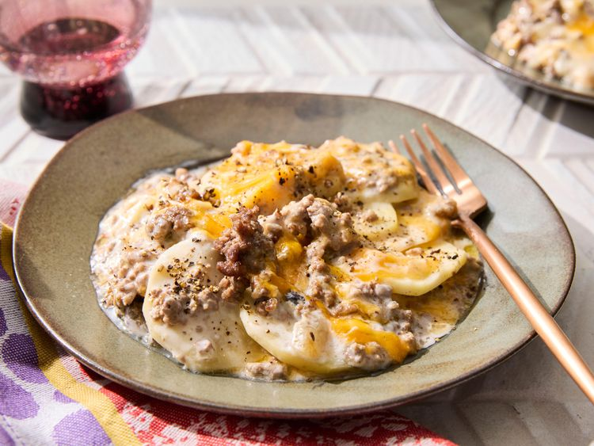

<= Home
Cowboy Cassarole

This slow cooker cowboy casserole is a family-friendly, budget-friendly layered casserole of ground beef, sliced potatoes, and Cheddar cheese. It's easy to put together and let the slow cooker do the rest.
Ingredients
- 1 pound lean ground beef
- 1/2 cup chopped onion
- 2 garlic cloves, pressed
- 1 can condensed cream of mushroom soup
- 1 cup milk
- 4 cups sliced peeled potatoes
- 2 cups shredded Cheddar cheese
- salt and freshly ground black pepper to taste
Steps
- Gather the ingredients.
- Cook lean ground beef and onion over medium heat until beef is browned and onion is soft and translucent, 6 to 7 minutes. Add garlic and cook until fragrant, about 1 minute. Season with salt and pepper.
- Stir soup and milk together in a bowl.
- Line a slow cooker with a slow cooker bag. Place a layer of potatoes, overlapping as needed, at the bottom of slow cooker. Season with salt and pepper. Top with a layer of ground beef, a layer of soup mixture and 1 cup cheese. Repeat layers with remaining ingredients.
- Cook on High until potatoes are fork tender, 3 to 4 hours.